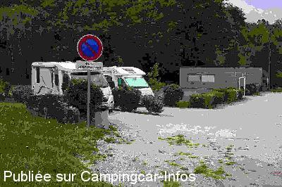

ASN = Aire de services avec stationnement nuit possible de :
SAINT GEORGES SUR MOULON
(N° 677)
Accès/adresse :
Route de la Ville
18110 SAINT GEORGES SUR MOULON
18110 SAINT GEORGES SUR MOULON
Latitude : (Nord) 47.18567° Décimaux ou 47° 11′ 8′′
Longitude : (Est) 2.41801° Décimaux ou 2° 25′ 4′′
Tarif : Gratuit
Type de borne : Autre
Services :


Possibilité de repas
Autres informations :
Ouverte d'avril à fin octobre
2 emplacements
Tel mairie : + 33(0)248 645 158

Le 15/05/2013 par P.HEREAU
de
Franck56
le 29/08/2015 :
Aire très agréable pour qui cherche la tranquillité et la verdure. Très bonne signalétique pour s y rendre. Pas d ombre par ce samedi de fin août à 33° mais ça...
Merci à la commune !
Aire très agréable pour qui cherche la tranquillité et la verdure. Très bonne signalétique pour s y rendre. Pas d ombre par ce samedi de fin août à 33° mais ça...
Merci à la commune !
de
Gilles et Nadette
le 15/07/2013 :
De Gilles et Nadette. De passage le 04/06/13 nous avons été surpris de trouver des barres a 2.00 m de hauteur donc impossible de stationner donc nous avons stationner a Bourges près du stade
De Gilles et Nadette. De passage le 04/06/13 nous avons été surpris de trouver des barres a 2.00 m de hauteur donc impossible de stationner donc nous avons stationner a Bourges près du stade
de
Yvesobene
le 05/10/2012 :
Aire toujours agréable et tranquille.
La borne fonctionnait parfaitement
Aire toujours agréable et tranquille.
La borne fonctionnait parfaitement
de
Lexa
le 19/03/2008 :
L'aire existe toujours, elle est "paneautée" depuis la D940 (au feu rouge). La borne était encore en position "hors gel".
L'aire existe toujours, elle est "paneautée" depuis la D940 (au feu rouge). La borne était encore en position "hors gel".
de
JEAN MARIE
le 28/10/2006 :
L'aire était encore ouverte. Nous y avons stationné à deux CC. Endroit tranquille en contre bas du village, un peu étroit.
L'aire était encore ouverte. Nous y avons stationné à deux CC. Endroit tranquille en contre bas du village, un peu étroit.
de
w.kruijsse
le 12/01/2006 :
juni 2005. Wij vonden een afgesloten[slagboom]camperplaats.Een bord vermeldde ;"opgeheven"
juni 2005. Wij vonden een afgesloten[slagboom]camperplaats.Een bord vermeldde ;"opgeheven"